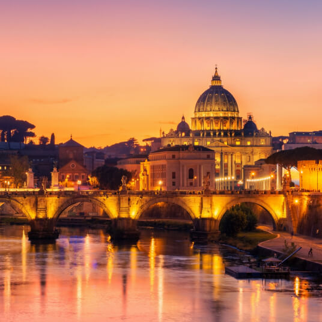

Day 1 · Mehrangarh & old city
Start at Mehrangarh Fort, continue to Jaswant Thada, then explore the Clock Tower and Sardar Market area at a relaxed pace.
Combine Mehrangarh Fort, the old city, local markets and selected wider-city sights without rushing between stops.

Keep the fort and old city together, then use the second day for Blue City walks and selected wider Jodhpur attractions.
Start at Mehrangarh Fort, continue to Jaswant Thada, then explore the Clock Tower and Sardar Market area at a relaxed pace.
Plan a respectful walk through selected blue lanes, then choose Umaid Bhawan Palace Museum, Mandore Gardens or Rao Jodha Desert Rock Park.
The old city gives atmosphere and fort views but narrow lanes can limit vehicle access. More modern areas can be easier for parking, railway and airport transfers.
Try established outlets for mirchi bada, mawa kachori and traditional dishes, keeping hygiene and dietary needs in mind.
October to March is generally comfortable for outdoor sightseeing. Summer needs early starts and midday breaks.
Blue City lanes are living communities. Ask before photographing residents and use a responsible local guide when useful.
Share your dates, pickup city, hotel area and onward destination. We can help shape a practical Jodhpur stop around the rest of your trip.
Send Jodhpur Dates